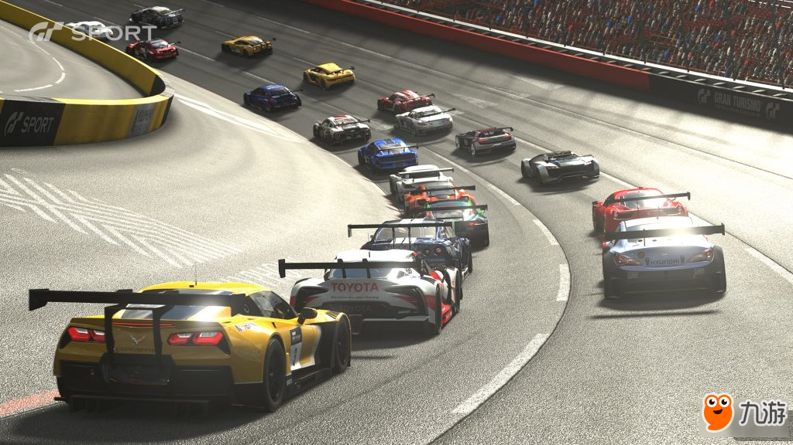
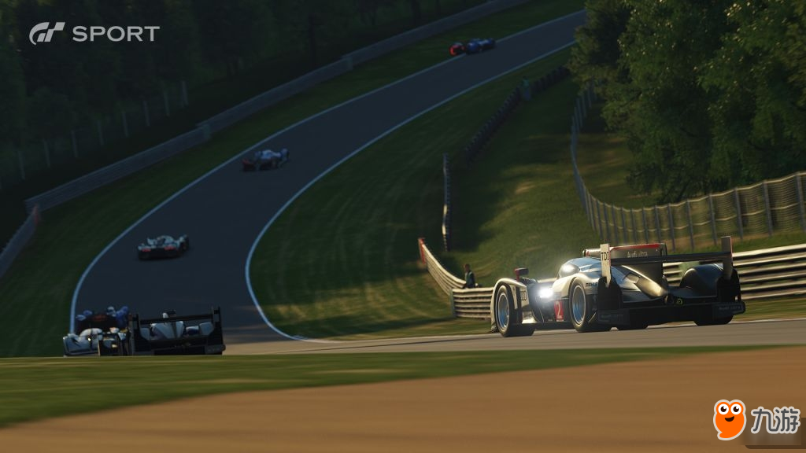
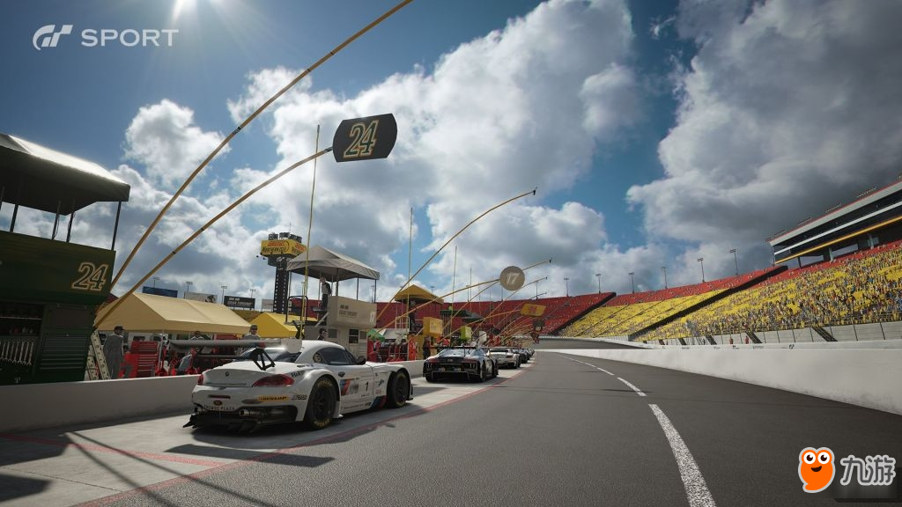

北京时间今天早上五点，今年的E3游戏展微软展前发布会如期举行，除了发布了其全新主机Xbox One X之外，同时也发布了多款全新的作品，在缺少了《战争机器》、《光环》等第一方大作护航的情况下，《极限竞速7》自然就扛起了此次发布会的新主机护航大任，现场展示的游戏画面还是非常惊艳的。而作为另外一个主机游戏中竞速类作品的经典之作，《GT赛车》似乎已经很多年没有新作和玩家们见面了。而就在今天山内一典在推特上宣布将会在北京时间明天8点30分公布《GT：Sport》的主题曲以及发售时间。
作为Play Station平台上竞速游戏的代表作之一，系列最早是在1997年发布第一款作品，无论是游戏的画面、操作手感、车型数量还是系统在当时来说都可以说是非常出色的，而且一直以来这款游戏都是由Play Station系列主机独占，目前该系列在全球范围内已经售出了超过9000万套的游戏作品，而游戏的上一款正统续作还是2013年发售的《GT赛车6》，作为PS主机的竞速独占力作，却迟迟没有新作PS4主机让不少玩家失望不已，终于在明天我们就可以看到其新作《GT：Sport》的发售日期了，不过估计也就是在今年年底玩家们应该就能体验到这款游戏了。在《GT赛车》系列未出新作这几年，微软的《极限竞速》通过差不多一年一作的频率渐渐的获得玩家们的关注，而且系列衍生作品《极限竞速：地平线》系列凭借着高自由度的玩法也是颇受玩家们的青睐，而今年除了这两款竞速大作之外，《赛车计划2》与《飙酷车神》也都会在近期和玩家见面，看来这段时间对于竞速游戏爱好者们来说是非常过瘾的。
 